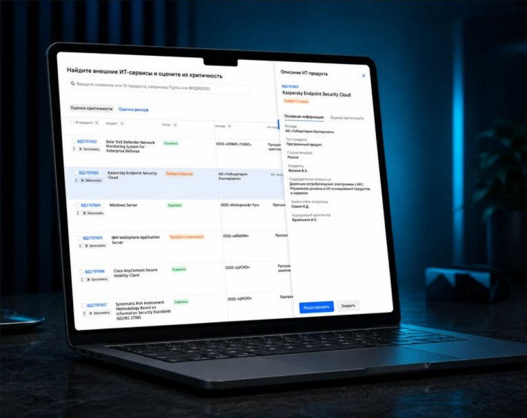
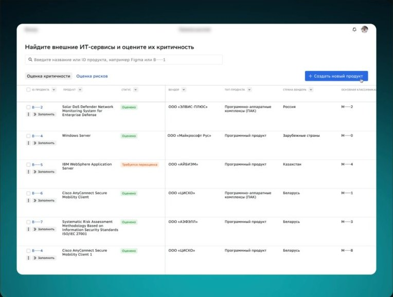
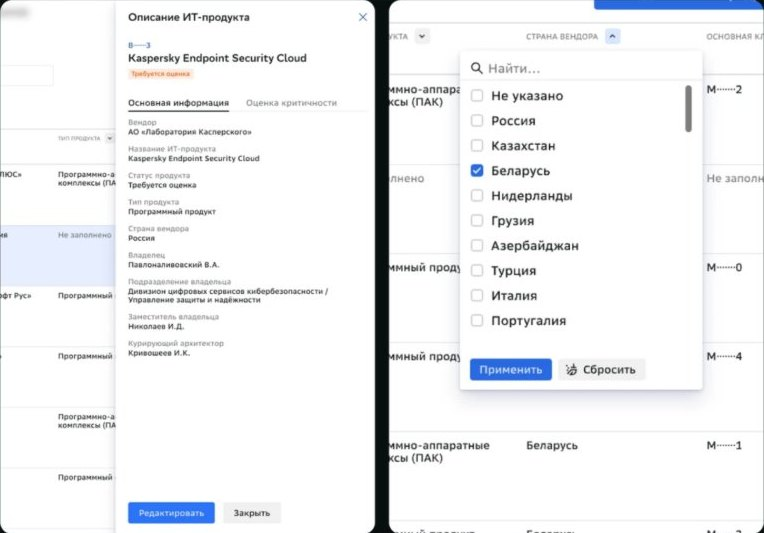
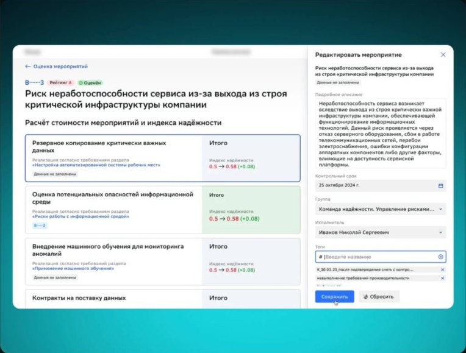
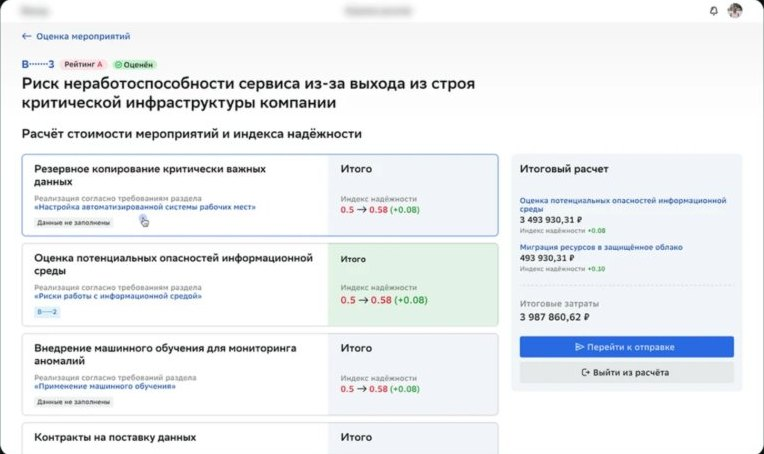
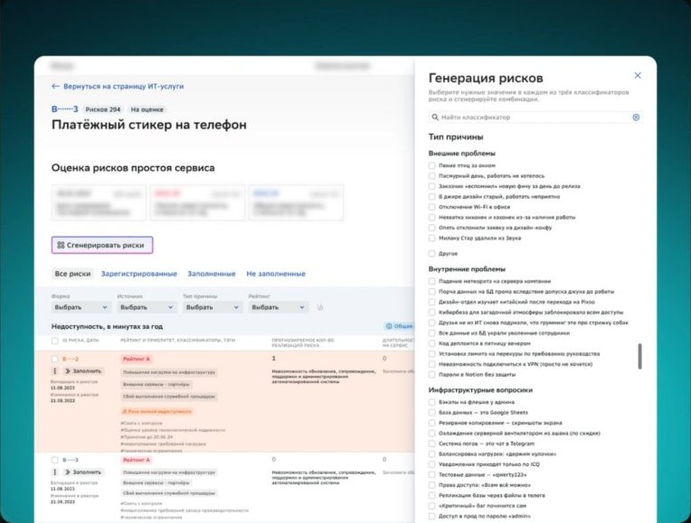
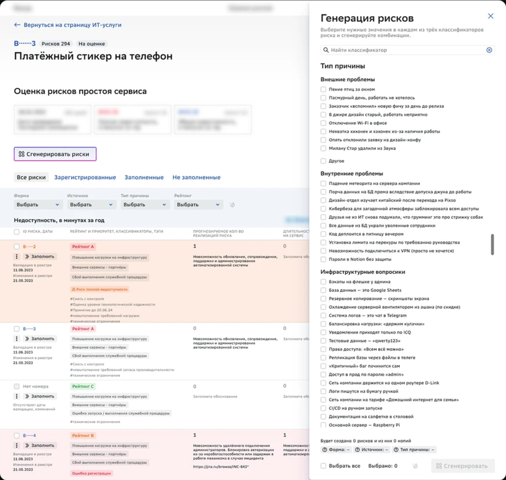

Оценка рисков
Сервис оценки рисков работы компании с ИТ-системами. Помогает предотвратить отказы систем и приложений, чтобы избежать потери данных и простоев.
Все названия и значения в макетах заменены из-за NDA.

Моя роль
Провёл полный цикл: от анализа проблем пользователей до финального дизайна и передачи в разработку.
- самостоятельно разрабатывал новые функции;
- дорабатывал и улучшал старый функционал;
- участвовал в сборе требований и исследованиях;
- проходил ревью готовых задач у дизайн-лида.
Оценка рисков работы компании с внешними ИТ-сервисами

Проблема
Эксперты оценивали риски в Excel и отправляли друг другу по почте. Письма терялись и дублировались, оценки нигде не хранились системно.
Что говорили пользователи
Мы очень много работаем с фильтрами во время оценок. Одновременно можем применять до 5 разных видов — используем фильтры почти на всех столбцах.
Нам очень помогает в Excel возможность сравнивать продукты между собой во время оценки. Это сильно экономит время, когда оцениваешь похожие продукты из одного семейства.
Для качественной оценки важно видеть всю информацию о продукте: тип продукта, страну происхождения, нормы классификации и т.д.
Решение
Сделал единое место для просмотра и оценки всех рисков, чтобы не переходить между сервисами и не терять контекст.
Фильтры работают по каждому столбцу, как пользователи привыкли в Excel, а карточка продукта открывается сбоку — вся информация в одном окне.

Результат
в куче Excel→онлайн- где живут оценки
2 дня→1,5 дня- среднее время оценки одного продукта
Оценка и отправка мероприятий

Проблема
Чтобы зарегистрировать мероприятия, пользователь работал в двух сервисах: в одном генерировался список, в другом его заполняли. Постоянные переходы приводили к ошибкам, потере данных и замедляли работу.
Решение
Доработал сервис генерации рисков, чтобы данные заполнялись прямо в нём. После заполнения они автоматически передаются во второй сервис.

Результат
3,5 ★→4,0 ★- CSI оценки мероприятий, количественный опрос с ранжированием
30 мин→20 мин- время заполнения и регистрации одного риска
Генерация типовых рисков

Проблема
У каждого риска есть форма, источник и тип причины. Пользователи вручную составляли из них все возможные комбинации, а затем оценивали. Это занимало много времени, и часть рисков терялась из-за человеческого фактора.
Решение
Сделал автоматическую генерацию рисков. Пользователь выбирает подходящие значения по классификаторам, а сервис сам добавляет все возможные комбинации.

Результат
~10%→~1%- рисков теряется из-за человеческого фактора
120 мин→60 мин- среднее время создания набора рисков для сервиса